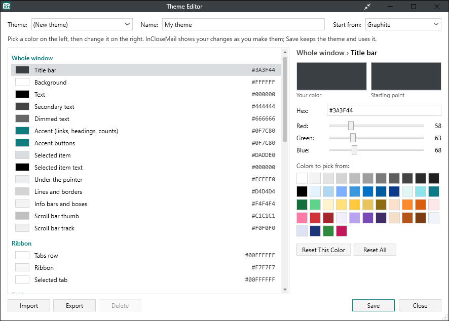
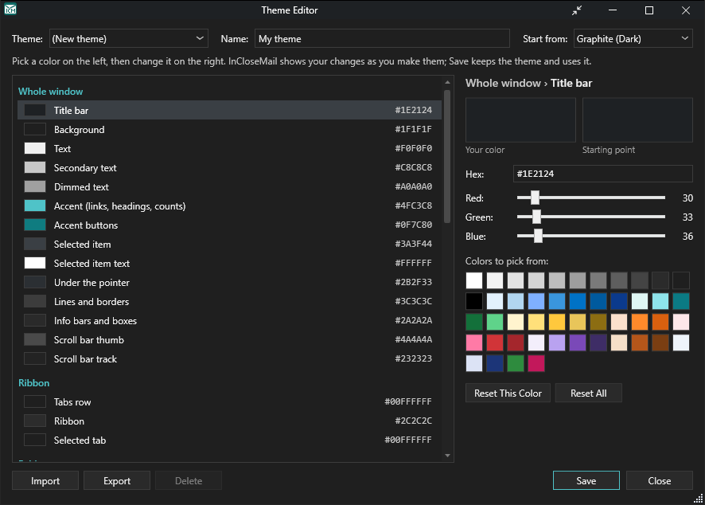

- Light in classic Outlook’s gray look, Dark in the same look turned dark, and the plain White and dark Gray, following Windows until you choose, with Switch Background for a message. High Contrast, and Windows’ own high-contrast themes.
- Themes (only in InCloseMail): Ocean, Forest, Plum and Graphite, each in light and dark, and holiday themes, or one that changes with the season.
- The Theme Editor (only in InCloseMail; File → Account, or File → Options → General): start from any theme and color each part of the window (title bar, ribbon, folder pane, message list, reading pane header, status bar, calendar), watching InCloseMail change as you pick. Keep as many as you like; they follow you to your other PCs. Export saves one as an .icmtheme file to share, and Import Theme adds one someone shared with you.




- In your language: English, Deutsch, Français, Español, Italiano, Português (Brasil), 日本語, 한국어, 简体中文 and 繁體中文, following Windows until you choose one in Options → Language. Folder names such as Inbox come from your mailbox, in the language it’s set to.
- Other Settings for the message list: fonts, grid lines and a compact layout.
- Zoom the whole window with Ctrl+mouse wheel.
- Ease of Access options, screen reader support, and KeyTips (Alt) for the ribbon.
Missing something you used in Outlook? Choose Help → Suggest a Feature in the app. Found a bug? Choose Help → Report a Bug.